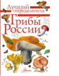

Определитель «Грибы России» включает не только самые распространенные, но и относительно редкие виды грибов, встречающиеся на территории нашей страны. В книге можно найти информацию о том, как они выглядят, где и в какое время их можно найти, а также об использовании. Автор определителя — известный грибник, миколог Станислав Кривошеев, член Санкт-Петербургского Микологического Общества. Кроме ярких фотографий, читатели смогут увидеть и прекрасные акварели Александра Вязьменского, художника, который вдохновенно рисует грибы с натуры.